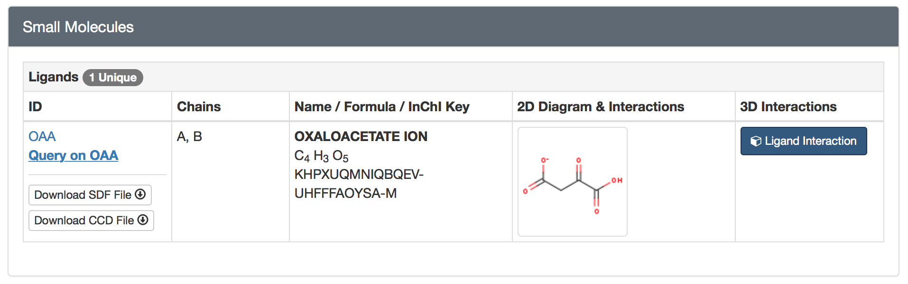
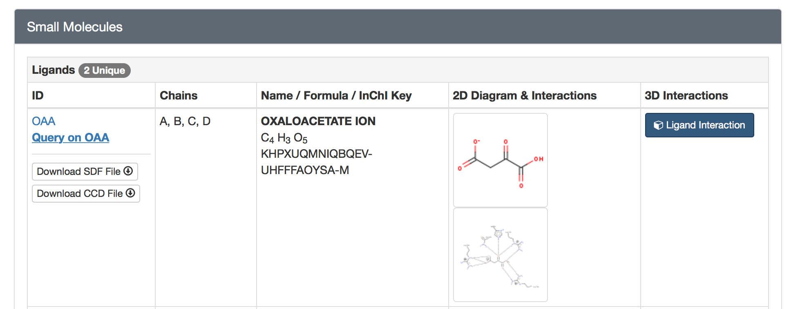
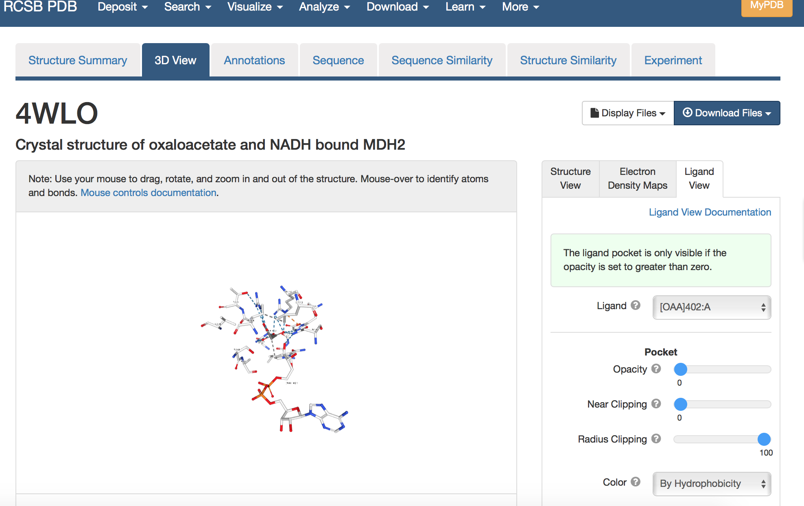
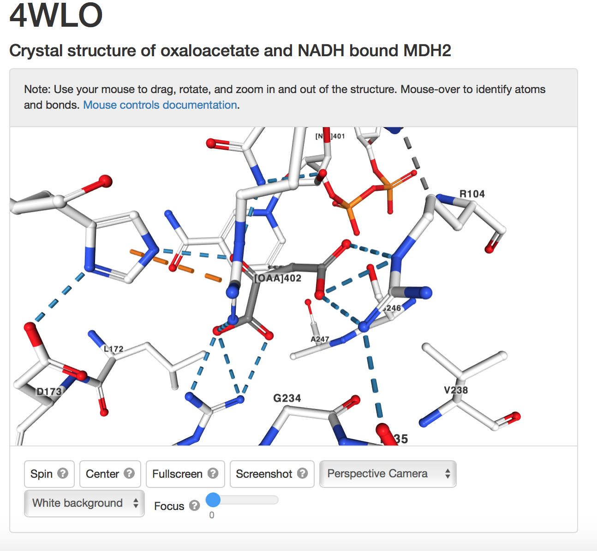
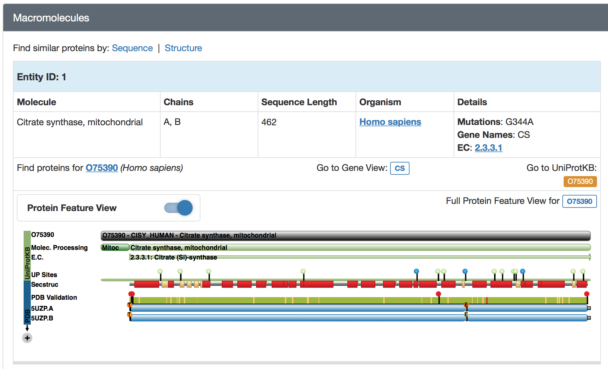
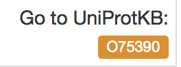

Step Four: Identify Important Amino Acids
a) select ligand interaction on the PDB page
NOTE: record the chain the ligand is bound to
ex) chain A for both proteins
5UZP Ligand information

4WLO Ligand information

b) in the viewer identify the amino acids bound to the ligand

Zoomed in Ligand View to Identify Amino Acids Invloved in Bonding

ex)ARG 104 is important, a hydrogen bond is shown between the residue and the ligand
NOTE: record the residue number of the ligand ex) [OAA]402
c) additional information may be collected using the Uniprot database
- a link to Uniprot is provided for the protein based on the name

- the link is in the macromolecule section in a small orange box
